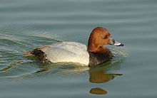
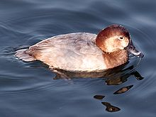
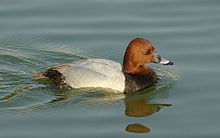
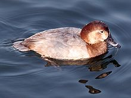

| Common Pochard | |
|---|---|
|  | |
| Male | |
|  | |
| Female | |
| Conservation status | |
| Binomial name | |
| Aythya ferina (Linnaeus, 1758) |
| Common Pochard | |
|---|---|
|  | |
| Male | |
|  | |
| Female | |
| Conservation status | |
| Binomial name | |
| Aythya ferina (Linnaeus, 1758) |
The Common Pochard, Aythya ferina, is a medium-sized diving duck.
The adult male has a long dark bill with a grey band, a red head and neck, a black breast, red eyes and a grey back. The adult female has a brown head and body and a narrower grey bill band. The triangular head shape is distinctive. Pochards are superficially similar to the closely related North American Redhead and Canvasback.
Their breeding habitat is marshes and lakes with a metre or more water depth. Pochards breed in much of temperate and northern Europe into Asia. They are migratory, and winter in the southern and west of Europe.
These are gregarious birds, forming large flocks in winter, often mixed with other diving ducks, such as Tufted Duck, which they are known to hybridise with.
These birds feed mainly by diving or dabbling. They eat aquatic plants with some molluscs, aquatic insects and small fish. They often feed at night, and will upend for food as well as the more characteristic diving.
In the British Isles, birds breed in eastern England and lowland Scotland, and in small numbers in Northern Ireland, with numbers increasing gradually. Large numbers overwinter in Great Britain, after retreating from Russia and Scandinavia.
The Pochard is one of the species to which the Agreement on the Conservation of African-Eurasian Migratory Waterbirds (AEWA) applies.

{kind=link}
{kind=link}